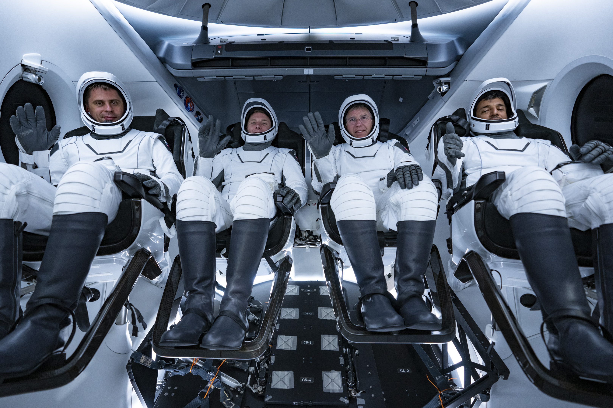
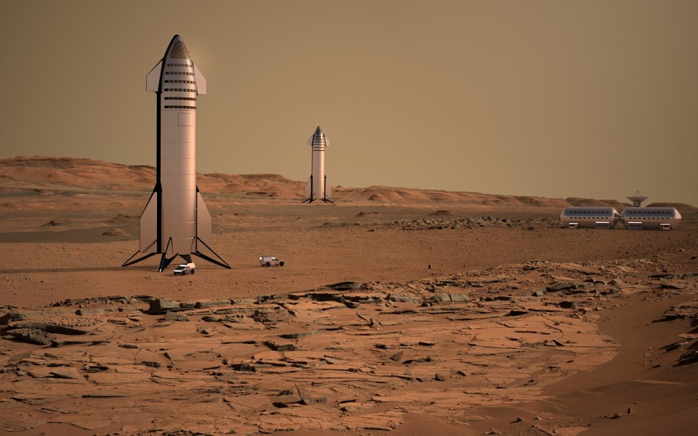

О компании
SpaceX, или Space Exploration Technologies Corp., — это американская компания, специализирующаяся на аэрокосмических технологиях и космических полетах. Она была основана Илоном Маском в 2002 году с целью сделать космические путешествия более доступными и сократить затраты на их проведение.
Компания стремится продвигать инновации в области ракетостроения, используя современные технологии и подходы к проектированию. SpaceX известна своим фокусом на многоразовых космических кораблях и ракетах, что позволяет значительно снижать стоимость запусков.

В центре философии SpaceX находится идея о том, что освоение космоса должно быть доступным не только для государственных организаций, но и для частных компаний и индивидуальных клиентов. Компания игнорирует традиционные методы в вопросах проектирования и производства, что позволяет ей быстро адаптироваться и внедрять новые решения.
SpaceX также активно занимается разработкой решений для улучшения связи и доступа к интернету через свои проектируемые спутниковые сети, а также исследует различные возможности для новых видов коммерческих космических услуг.
Сотрудничество с NASA
SpaceX и NASA работают вместе над многими проектами, включая программу Commercial Crew Program, которая направлена на доставку астронавтов на Международную космическую станцию (МКС). Цель этой программы заключалась в создании частных космических систем для транспортировки астронавтов к МКС и обратно. SpaceX выиграла этот конкурс, разработав пилотируемую версию своего корабля Dragon — Crew Dragon. В мае 2020 года Crew Dragon успешно доставил астронавтов на МКС в ходе миссии Demo-2, став первым коммерческим космическим кораблем, выполнившим пилотируемый полет. Этот момент стал историческим и открыл новую эру не только для SpaceX, но и для всего человечества, продемонстрировав возможность частных полетов в космос.
Сотрудничество между SpaceX и NASA затрагивает не только грузовые и пилотируемые полеты, но и научные исследования. Космический корабль Dragon использовался для доставки различных научных приборов и материалов для экспериментов на МКС, что способствовало развитию науки и техники. Например, аренда SpaceX для доставки оборудования на станцию позволила NASA сосредоточиться на научных задачах и обеспечила более эффективное использование ресурсов.
Кроме того, партнерство между двумя организациями не ограничивается лишь текущими проектами. Космические исследования и эксплорация планет требуют сложных технологий и значительных финансовых вложений. Сотрудничество SpaceX и NASA направлено на создание устойчивой экосистемы для дальнейших космических исследований, включая долгосрочные планы по возвращению людей на Луну в рамках программы Artemis и будущие миссии на Марс.
Марсианская миссия SpaceX
Основой марсианской миссии SpaceX является их многоразовый космический корабль Starship, который находится на стадии разработки. Starship был задуман как многозначный корабль, способный перевозить и грузы, и людей, с задачей не только осуществлять полеты на Марс, но и возвращать их на Землю.
Однако миссия на Красную планету требует не только надежного транспортного средства, но и продуманной инфраструктуры. SpaceX работает над концепцией создания колонии на Марсе, которая может включать в себя системы жизнеобеспечения, энергетические источники, а также технологии для добычи и использования местных ресурсов. Маск предлагает использовать углекислый газ из атмосферы Марса для производства метана, что может обеспечить топливо для обратного полета на Землю.
Несмотря на все преграды и вызовы, марсианская миссия SpaceX является символом человеческого стремления к приключениям и исследованиям. Она вдохновляет новое поколение инженеров, ученых и мечтателей, показывая, что возможности человечества простираются далеко за пределы нашей планеты. Mars стал не просто мечтой, но реальной целью, к которой человечество движется с каждым днем.
Контакты
Если у вас есть вопросы или предложения, вы можете связаться с нами по следующим каналам:
- Email: info@spacex.com
- Телефон: +1 (310) 363-6000
- Адрес: 1 Rocket Road, Hawthorne, CA 90250, США